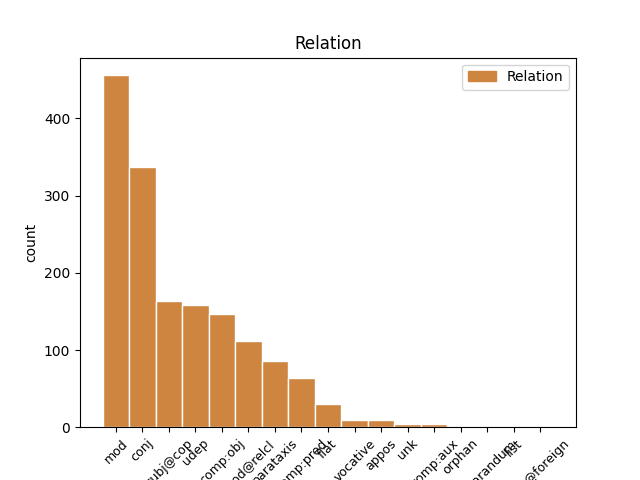
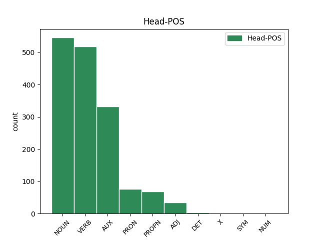
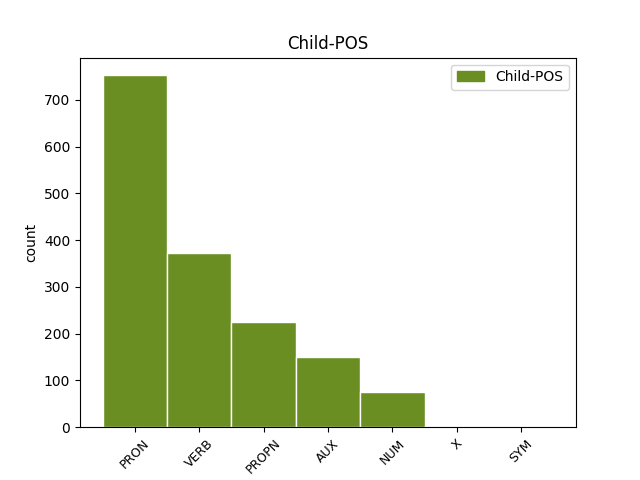

Distribution of features within this leaf



Agreement Rules sorted by frequency.
- When the dependent token is the modifer(mod) of the head token, and the dependent token is PRON.
1 Ja _ _ _ _ 0 _ _ _
2 muideks _ _ _ _ 0 _ _ _
3 see _ _ _ _ 0 _ _ _
4 krõbin _ _ _ _ 0 _ _ _
5 on _ _ _ _ 0 _ _ _
6 kohe _ _ _ _ 0 _ _ _
7 algusest _ _ _ _ 0 _ _ _
8 saati _ _ _ _ 0 _ _ _
9 mu mina PRON P Case=Gen|Number=Sing|Person=1|PronType=Prs 10 mod _ _
10 telefonil telefon NOUN S Case=Ade|Number=Sing 0 _ _ _
11 olnud _ _ _ _ 0 _ _ _
12 , _ _ _ _ 0 _ _ _
13 peale _ _ _ _ 0 _ _ _
14 pakist _ _ _ _ 0 _ _ _
15 väljavõttu _ _ _ _ 0 _ _ _
16 panin _ _ _ _ 0 _ _ _
17 tähele _ _ _ _ 0 _ _ _
18 . _ _ _ _ 0 _ _ _
1 Ja _ _ _ _ 0 _ _ _
2 muideks _ _ _ _ 0 _ _ _
3 see _ _ _ _ 0 _ _ _
4 krõbin _ _ _ _ 0 _ _ _
5 on _ _ _ _ 0 _ _ _
6 kohe _ _ _ _ 0 _ _ _
7 algusest _ _ _ _ 0 _ _ _
8 saati _ _ _ _ 0 _ _ _
9 mu _ _ _ _ 0 _ _ _
10 telefonil telefon NOUN S Case=Ade|Number=Sing 0 _ _ _
11 olnud _ _ _ _ 0 _ _ _
12 , _ _ _ _ 0 _ _ _
13 peale _ _ _ _ 0 _ _ _
14 pakist _ _ _ _ 0 _ _ _
15 väljavõttu _ _ _ _ 0 _ _ _
16 panin panema VERB V Mood=Ind|Number=Sing|Person=1|Tense=Past|VerbForm=Fin|Voice=Act 10 conj _ _
17 tähele _ _ _ _ 0 _ _ _
18 . _ _ _ _ 0 _ _ _
1 Aga _ _ _ _ 0 _ _ _
2 Chris _ _ _ _ 0 _ _ _
3 ... _ _ _ _ 0 _ _ _
4 mis mis PRON P Case=Nom|Number=Sing|PronType=Int,Rel 7 subj@cop _ _
5 siis _ _ _ _ 0 _ _ _
6 katki _ _ _ _ 0 _ _ _
7 saab saama AUX V Mood=Ind|Number=Sing|Person=3|Tense=Pres|VerbForm=Fin|Voice=Act 0 _ _ _
8 olla _ _ _ _ 0 _ _ _
9 kui _ _ _ _ 0 _ _ _
10 kõik _ _ _ _ 0 _ _ _
11 asjad _ _ _ _ 0 _ _ _
12 ilusti _ _ _ _ 0 _ _ _
13 töötavad _ _ _ _ 0 _ _ _
14 ? _ _ _ _ 0 _ _ _
1 Körin _ _ _ _ 0 _ _ _
2 vöib _ _ _ _ 0 _ _ _
3 olla _ _ _ _ 0 _ _ _
4 mingist _ _ _ _ 0 _ _ _
5 lahtisest _ _ _ _ 0 _ _ _
6 asjast _ _ _ _ 0 _ _ _
7 ja _ _ _ _ 0 _ _ _
8 hooldus _ _ _ _ 0 _ _ _
9 voi _ _ _ _ 0 _ _ _
10 garantii _ _ _ _ 0 _ _ _
11 teeb tegema VERB V Mood=Ind|Number=Sing|Person=3|Tense=Pres|VerbForm=Fin|Voice=Act 0 _ _ _
12 selle see PRON P Case=Gen|Number=Sing|PronType=Dem 11 comp:obj _ _
13 korda _ _ _ _ 0 _ _ _
14 . _ _ _ _ 0 _ _ _
1 See _ _ _ _ 0 _ _ _
2 lihtsalt _ _ _ _ 0 _ _ _
3 viitab viitama VERB V Mood=Ind|Number=Sing|Person=3|Tense=Pres|VerbForm=Fin|Voice=Act 0 _ _ _
4 sellele see PRON P Case=All|Number=Sing|PronType=Dem 3 udep _ SpaceAfter=No
5 , _ _ _ _ 0 _ _ _
6 et _ _ _ _ 0 _ _ _
7 midagi _ _ _ _ 0 _ _ _
8 on _ _ _ _ 0 _ _ _
9 sees _ _ _ _ 0 _ _ _
10 nii _ _ _ _ 0 _ _ _
11 nagu _ _ _ _ 0 _ _ _
12 ei _ _ _ _ 0 _ _ _
13 peaks _ _ _ _ 0 _ _ _
14 olema _ _ _ _ 0 _ _ _
15 . _ _ _ _ 0 _ _ _
1 1 _ _ _ _ 0 _ _ _
2 ei _ _ _ _ 0 _ _ _
3 ole _ _ _ _ 0 _ _ _
4 massiline _ _ _ _ 0 _ _ _
5 , _ _ _ _ 0 _ _ _
6 ja _ _ _ _ 0 _ _ _
7 võttes _ _ _ _ 0 _ _ _
8 konsentratsiooniks _ _ _ _ 0 _ _ _
9 see _ _ _ _ 0 _ _ _
10 siin _ _ _ _ 0 _ _ _
11 + _ _ _ _ 0 _ _ _
12 froniuse fronius PROPN S Case=Gen|Number=Sing 13 mod _ _
13 oma oma PRON P Case=Nom|Number=Sing|Poss=Yes|PronType=Prs 0 _ _ _
14 siis _ _ _ _ 0 _ _ _
15 on _ _ _ _ 0 _ _ _
16 see _ _ _ _ 0 _ _ _
17 väga _ _ _ _ 0 _ _ _
18 väike _ _ _ _ 0 _ _ _
19 konsentratsioon _ _ _ _ 0 _ _ _
20 . _ _ _ _ 0 _ _ _
1 ja _ _ _ _ 0 _ _ _
2 kui _ _ _ _ 0 _ _ _
3 saab _ _ _ _ 0 _ _ _
4 tugeva _ _ _ _ 0 _ _ _
5 löögi _ _ _ _ 0 _ _ _
6 nurka _ _ _ _ 0 _ _ _
7 siis _ _ _ _ 0 _ _ _
8 on _ _ _ _ 0 _ _ _
9 ekraan _ _ _ _ 0 _ _ _
10 totaalselt _ _ _ _ 0 _ _ _
11 puru _ _ _ _ 0 _ _ _
12 , _ _ _ _ 0 _ _ _
13 samas _ _ _ _ 0 _ _ _
14 kui _ _ _ _ 0 _ _ _
15 tavalisel _ _ _ _ 0 _ _ _
16 klaasile _ _ _ _ 0 _ _ _
17 võib _ _ _ _ 0 _ _ _
18 teha _ _ _ _ 0 _ _ _
19 vaid _ _ _ _ 0 _ _ _
20 ühe üks NUM N Case=Gen|Number=Sing|NumType=Card 22 mod _ _
21 pooliku _ _ _ _ 0 _ _ _
22 prao pragu NOUN S Case=Gen|Number=Sing 0 _ _ _
23 , _ _ _ _ 0 _ _ _
24 kui _ _ _ _ 0 _ _ _
25 sedagi _ _ _ _ 0 _ _ _
26 . _ _ _ _ 0 _ _ _
1 Garantii _ _ _ _ 0 _ _ _
2 on _ _ _ _ 0 _ _ _
3 ilmselt _ _ _ _ 0 _ _ _
4 selle _ _ _ _ 0 _ _ _
5 pärast _ _ _ _ 0 _ _ _
6 välja _ _ _ _ 0 _ _ _
7 mõeldud _ _ _ _ 0 _ _ _
8 et _ _ _ _ 0 _ _ _
9 100 _ _ _ _ 0 _ _ _
10 % _ _ _ _ 0 _ _ _
11 kvaliteeti _ _ _ _ 0 _ _ _
12 ei _ _ _ _ 0 _ _ _
13 taga _ _ _ _ 0 _ _ _
14 keegi _ _ _ _ 0 _ _ _
15 , _ _ _ _ 0 _ _ _
16 ega _ _ _ _ 0 _ _ _
17 suuda _ _ _ _ 0 _ _ _
18 välistada _ _ _ _ 0 _ _ _
19 väiksemaid _ _ _ _ 0 _ _ _
20 defekte defekt NOUN S Case=Par|Number=Plur 0 _ _ _
21 toodetel _ _ _ _ 0 _ _ _
22 , _ _ _ _ 0 _ _ _
23 mis _ _ _ _ 0 _ _ _
24 kasutades _ _ _ _ 0 _ _ _
25 esile _ _ _ _ 0 _ _ _
26 tulevad tulema VERB V Mood=Ind|Number=Plur|Person=3|Tense=Pres|VerbForm=Fin|Voice=Act 20 mod@relcl _ _
27 .. _ _ _ _ 0 _ _ _
28 isegi _ _ _ _ 0 _ _ _
29 see _ _ _ _ 0 _ _ _
30 puuvilja _ _ _ _ 0 _ _ _
31 firma _ _ _ _ 0 _ _ _
32 mitte _ _ _ _ 0 _ _ _
33 , _ _ _ _ 0 _ _ _
34 rääkimata _ _ _ _ 0 _ _ _
35 pesumasina _ _ _ _ 0 _ _ _
36 firmast _ _ _ _ 0 _ _ _
37 . _ _ _ _ 0 _ _ _
1 Nokia _ _ _ _ 0 _ _ _
2 N95'el _ _ _ _ 0 _ _ _
3 sai saama AUX V Mood=Ind|Number=Sing|Person=3|Tense=Past|VerbForm=Fin|Voice=Act 0 _ _ _
4 jah _ _ _ _ 0 _ _ _
5 mingid _ _ _ _ 0 _ _ _
6 kaitse _ _ _ _ 0 _ _ _
7 läätse _ _ _ _ 0 _ _ _
8 tagand _ _ _ _ 0 _ _ _
9 maha _ _ _ _ 0 _ _ _
10 raputada _ _ _ _ 0 _ _ _
11 , _ _ _ _ 0 _ _ _
12 see _ _ _ _ 0 _ _ _
13 oli olema AUX V Mood=Ind|Number=Sing|Person=3|Tense=Past|VerbForm=Fin|Voice=Act 3 conj _ _
14 kord _ _ _ _ 0 _ _ _
15 lahti _ _ _ _ 0 _ _ _
16 siis _ _ _ _ 0 _ _ _
17 raputat _ _ _ _ 0 _ _ _
18 ja _ _ _ _ 0 _ _ _
19 läks _ _ _ _ 0 _ _ _
20 ise _ _ _ _ 0 _ _ _
21 kinni _ _ _ _ 0 _ _ _
22 . _ _ _ _ 0 _ _ _
1 sellest see PRON P Case=Ela|Number=Sing|PronType=Dem 2 comp:pred _ _
2 oli olema AUX V Mood=Ind|Number=Sing|Person=3|Tense=Past|VerbForm=Fin|Voice=Act 0 _ _ _
3 juttu _ _ _ _ 0 _ _ _
4 juba _ _ _ _ 0 _ _ _
5 päris _ _ _ _ 0 _ _ _
6 ammu _ _ _ _ 0 _ _ _
7 aga _ _ _ _ 0 _ _ _
8 kui _ _ _ _ 0 _ _ _
9 nüüd _ _ _ _ 0 _ _ _
10 õigesti _ _ _ _ 0 _ _ _
11 mäletan _ _ _ _ 0 _ _ _
12 siis _ _ _ _ 0 _ _ _
13 seda _ _ _ _ 0 _ _ _
14 häält _ _ _ _ 0 _ _ _
15 teeb _ _ _ _ 0 _ _ _
16 kaamera _ _ _ _ 0 _ _ _
17 fookus _ _ _ _ 0 _ _ _
18 . _ _ _ _ 0 _ _ _
1 ma _ _ _ _ 0 _ _ _
2 spets _ _ _ _ 0 _ _ _
3 lõpetasin lõpetama VERB V Mood=Ind|Number=Sing|Person=1|Tense=Past|VerbForm=Fin|Voice=Act 0 _ _ _
4 ülejäänud _ _ _ _ 0 _ _ _
5 jutu _ _ _ _ 0 _ _ _
6 sirvimise _ _ _ _ 0 _ _ _
7 ja _ _ _ _ 0 _ _ _
8 seost _ _ _ _ 0 _ _ _
9 ikka _ _ _ _ 0 _ _ _
10 ei _ _ _ _ 0 _ _ _
11 leidnud _ _ _ _ 0 _ _ _
12 - _ _ _ _ 0 _ _ _
13 üks _ _ _ _ 0 _ _ _
14 ütleb ütlema VERB V Mood=Ind|Number=Sing|Person=3|Tense=Pres|VerbForm=Fin|Voice=Act 3 parataxis _ _
15 et _ _ _ _ 0 _ _ _
16 levi _ _ _ _ 0 _ _ _
17 kehv _ _ _ _ 0 _ _ _
18 ja _ _ _ _ 0 _ _ _
19 siis _ _ _ _ 0 _ _ _
20 vastuseks _ _ _ _ 0 _ _ _
21 " _ _ _ _ 0 _ _ _
22 selliset _ _ _ _ 0 _ _ _
23 ja _ _ _ _ 0 _ _ _
24 muude _ _ _ _ 0 _ _ _
25 jamade _ _ _ _ 0 _ _ _
26 pärast _ _ _ _ 0 _ _ _
27 . _ _ _ _ 0 _ _ _
28 . _ _ _ _ 0 _ _ _
29 . _ _ _ _ 0 _ _ _
30 . _ _ _ _ 0 _ _ _
31 " _ _ _ _ 0 _ _ _
1 kuid _ _ _ _ 0 _ _ _
2 teema _ _ _ _ 0 _ _ _
3 pealkirjas _ _ _ _ 0 _ _ _
4 on _ _ _ _ 0 _ _ _
5 mainiutd _ _ _ _ 0 _ _ _
6 Galaxy Galaxy PROPN S Case=Nom|Number=Sing 0 _ _ _
7 S _ _ _ _ 0 _ _ _
8 Advance Advance PROPN S Case=Nom|Number=Sing 6 flat _ _
9 millel _ _ _ _ 0 _ _ _
10 kindlasti _ _ _ _ 0 _ _ _
11 kõikuvat _ _ _ _ 0 _ _ _
12 stabilisaatorit _ _ _ _ 0 _ _ _
13 ei _ _ _ _ 0 _ _ _
14 ole _ _ _ _ 0 _ _ _
15 . _ _ _ _ 0 _ _ _
1 reps _ _ _ _ 0 _ _ _
2 kirjutas _ _ _ _ 0 _ _ _
3 : _ _ _ _ 0 _ _ _
4 Vot _ _ _ _ 0 _ _ _
5 , _ _ _ _ 0 _ _ _
6 selliste _ _ _ _ 0 _ _ _
7 ja _ _ _ _ 0 _ _ _
8 muude _ _ _ _ 0 _ _ _
9 jamade _ _ _ _ 0 _ _ _
10 pärast _ _ _ _ 0 _ _ _
11 ma _ _ _ _ 0 _ _ _
12 jeliizast jeliiza PROPN S Case=Ela|Number=Sing 14 udep _ _
13 ära _ _ _ _ 0 _ _ _
14 tulingi tulema VERB V Mood=Ind|Number=Sing|Person=1|Tense=Past|VerbForm=Fin|Voice=Act 0 _ _ _
15 . _ _ _ _ 0 _ _ _
1 Tabasalulauri _ _ _ _ 0 _ _ _
2 kirjutas kirjutama VERB V Mood=Ind|Number=Sing|Person=3|Tense=Past|VerbForm=Fin|Voice=Act 0 _ _ _
3 : _ _ _ _ 0 _ _ _
4 kui _ _ _ _ 0 _ _ _
5 nüüd _ _ _ _ 0 _ _ _
6 õigesti _ _ _ _ 0 _ _ _
7 mäletan _ _ _ _ 0 _ _ _
8 siis _ _ _ _ 0 _ _ _
9 sama _ _ _ _ 0 _ _ _
10 probleem _ _ _ _ 0 _ _ _
11 oli olema AUX V Mood=Ind|Number=Sing|Person=3|Tense=Past|VerbForm=Fin|Voice=Act 2 parataxis _ _
12 ka _ _ _ _ 0 _ _ _
13 iphone _ _ _ _ 0 _ _ _
14 4s-il _ _ _ _ 0 _ _ _
15 . _ _ _ _ 0 _ _ _
1 See _ _ _ _ 0 _ _ _
2 on _ _ _ _ 0 _ _ _
3 ülesanne üles_anne NOUN S Case=Nom|Number=Sing 0 _ _ _
4 , _ _ _ _ 0 _ _ _
5 mille _ _ _ _ 0 _ _ _
6 pead pidama AUX V Mood=Ind|Number=Sing|Person=2|Tense=Pres|VerbForm=Fin|Voice=Act 3 mod@relcl _ _
7 lahendama _ _ _ _ 0 _ _ _
8 , _ _ _ _ 0 _ _ _
9 ISE _ _ _ _ 0 _ _ _
10 . _ _ _ _ 0 _ _ _
1 Muide _ _ _ _ 0 _ _ _
2 alles _ _ _ _ 0 _ _ _
3 ükspäev _ _ _ _ 0 _ _ _
4 lugesin _ _ _ _ 0 _ _ _
5 Türgis Türgi PROPN S Case=Ine|Number=Sing 0 _ _ _
6 , _ _ _ _ 0 _ _ _
7 Egipütuses Egiptus PROPN S Case=Ine|Number=Sing 5 conj _ _
8 jm _ _ _ _ 0 _ _ _
9 islamimaa _ _ _ _ 0 _ _ _
10 kronoloogilist _ _ _ _ 0 _ _ _
11 järjekorda _ _ _ _ 0 _ _ _
12 , _ _ _ _ 0 _ _ _
13 kus _ _ _ _ 0 _ _ _
14 olid _ _ _ _ 0 _ _ _
15 lausa _ _ _ _ 0 _ _ _
16 nimekirjad _ _ _ _ 0 _ _ _
17 . _ _ _ _ 0 _ _ _
1 Aga _ _ _ _ 0 _ _ _
2 jeliiza jeliiza PROPN S Case=Nom|Number=Sing 3 subj@cop _ _
3 on olema AUX V Mood=Ind|Number=Sing|Person=3|Tense=Pres|VerbForm=Fin|Voice=Act 0 _ _ _
4 saast _ _ _ _ 0 _ _ _
1 1 _ _ _ _ 0 _ _ _
2 ei _ _ _ _ 0 _ _ _
3 ole _ _ _ _ 0 _ _ _
4 massiline _ _ _ _ 0 _ _ _
5 , _ _ _ _ 0 _ _ _
6 ja _ _ _ _ 0 _ _ _
7 võttes _ _ _ _ 0 _ _ _
8 konsentratsiooniks _ _ _ _ 0 _ _ _
9 see see PRON P Case=Nom|Number=Sing|PronType=Dem 0 _ _ _
10 siin _ _ _ _ 0 _ _ _
11 + _ _ _ _ 0 _ _ _
12 froniuse _ _ _ _ 0 _ _ _
13 oma oma PRON P Case=Nom|Number=Sing|Poss=Yes|PronType=Prs 9 conj _ _
14 siis _ _ _ _ 0 _ _ _
15 on _ _ _ _ 0 _ _ _
16 see _ _ _ _ 0 _ _ _
17 väga _ _ _ _ 0 _ _ _
18 väike _ _ _ _ 0 _ _ _
19 konsentratsioon _ _ _ _ 0 _ _ _
20 . _ _ _ _ 0 _ _ _
1 Aga _ _ _ _ 0 _ _ _
2 Chris Chris PROPN S Case=Nom|Number=Sing 7 vocative _ _
3 ... _ _ _ _ 0 _ _ _
4 mis _ _ _ _ 0 _ _ _
5 siis _ _ _ _ 0 _ _ _
6 katki _ _ _ _ 0 _ _ _
7 saab saama AUX V Mood=Ind|Number=Sing|Person=3|Tense=Pres|VerbForm=Fin|Voice=Act 0 _ _ _
8 olla _ _ _ _ 0 _ _ _
9 kui _ _ _ _ 0 _ _ _
10 kõik _ _ _ _ 0 _ _ _
11 asjad _ _ _ _ 0 _ _ _
12 ilusti _ _ _ _ 0 _ _ _
13 töötavad _ _ _ _ 0 _ _ _
14 ? _ _ _ _ 0 _ _ _
1 ( _ _ _ _ 0 _ _ _
2 Tulin _ _ _ _ 0 _ _ _
3 New _ _ _ _ 0 _ _ _
4 Yorgist _ _ _ _ 0 _ _ _
5 lennuga lennuga NOUN S Case=Com|Number=Sing 0 _ _ _
6 UZBEKISTAN Uzbekistan PROPN S Case=Nom|Number=Sing 5 appos _ _
7 AIR _ _ _ _ 0 _ _ _
8 - _ _ _ _ 0 _ _ _
9 juba _ _ _ _ 0 _ _ _
10 ainuüksi _ _ _ _ 0 _ _ _
11 selle _ _ _ _ 0 _ _ _
12 kirja _ _ _ _ 0 _ _ _
13 nägemine _ _ _ _ 0 _ _ _
14 lennuki _ _ _ _ 0 _ _ _
15 küljel _ _ _ _ 0 _ _ _
16 tekitas _ _ _ _ 0 _ _ _
17 mul _ _ _ _ 0 _ _ _
18 paanikahoo _ _ _ _ 0 _ _ _
19 , _ _ _ _ 0 _ _ _
20 ei _ _ _ _ 0 _ _ _
21 saanud _ _ _ _ 0 _ _ _
22 enam _ _ _ _ 0 _ _ _
23 hingata _ _ _ _ 0 _ _ _
24 , _ _ _ _ 0 _ _ _
25 olin _ _ _ _ 0 _ _ _
26 kuni _ _ _ _ 0 _ _ _
27 viimase _ _ _ _ 0 _ _ _
28 hetkeni _ _ _ _ 0 _ _ _
29 ooteruumis _ _ _ _ 0 _ _ _
30 ja _ _ _ _ 0 _ _ _
31 läksin _ _ _ _ 0 _ _ _
32 lennukisse _ _ _ _ 0 _ _ _
33 , _ _ _ _ 0 _ _ _
34 kui _ _ _ _ 0 _ _ _
35 uksi _ _ _ _ 0 _ _ _
36 hakati _ _ _ _ 0 _ _ _
37 kinni _ _ _ _ 0 _ _ _
38 panema _ _ _ _ 0 _ _ _
39 , _ _ _ _ 0 _ _ _
40 ..... _ _ _ _ 0 _ _ _
41 lühidalt _ _ _ _ 0 _ _ _
42 asja _ _ _ _ 0 _ _ _
43 kokku _ _ _ _ 0 _ _ _
44 võttes _ _ _ _ 0 _ _ _
45 istusin _ _ _ _ 0 _ _ _
46 poole _ _ _ _ 0 _ _ _
47 lennust _ _ _ _ 0 _ _ _
48 hapniku _ _ _ _ 0 _ _ _
49 maski _ _ _ _ 0 _ _ _
50 otsas _ _ _ _ 0 _ _ _
51 . _ _ _ _ 0 _ _ _
52 . _ _ _ _ 0 _ _ _
53 . _ _ _ _ 0 _ _ _
54 ) _ _ _ _ 0 _ _ _
55 neelasin _ _ _ _ 0 _ _ _
56 rahusteid _ _ _ _ 0 _ _ _
57 ja _ _ _ _ 0 _ _ _
58 miski _ _ _ _ 0 _ _ _
59 ei _ _ _ _ 0 _ _ _
60 aidanud _ _ _ _ 0 _ _ _
61 .......... _ _ _ _ 0 _ _ _
1 Enda _ _ _ _ 0 _ _ _
2 meelest _ _ _ _ 0 _ _ _
3 hoian hoidma VERB V Mood=Ind|Number=Sing|Person=1|Tense=Pres|VerbForm=Fin|Voice=Act 0 _ _ _
4 oma _ _ _ _ 0 _ _ _
5 Samsungi Samsungi PROPN S Case=Par|Number=Sing 3 comp:obj _ _
6 üsna _ _ _ _ 0 _ _ _
7 hoolega _ _ _ _ 0 _ _ _
8 , _ _ _ _ 0 _ _ _
9 lisaks _ _ _ _ 0 _ _ _
10 on _ _ _ _ 0 _ _ _
11 ta _ _ _ _ 0 _ _ _
12 alati _ _ _ _ 0 _ _ _
13 koti _ _ _ _ 0 _ _ _
14 sees _ _ _ _ 0 _ _ _
15 ka _ _ _ _ 0 _ _ _
16 , _ _ _ _ 0 _ _ _
17 kui _ _ _ _ 0 _ _ _
18 taskus _ _ _ _ 0 _ _ _
19 või _ _ _ _ 0 _ _ _
20 laual _ _ _ _ 0 _ _ _
21 või _ _ _ _ 0 _ _ _
22 kuskil _ _ _ _ 0 _ _ _
23 on _ _ _ _ 0 _ _ _
24 . _ _ _ _ 0 _ _ _
1 Tabasalulauri _ _ _ _ 0 _ _ _
2 kirjutas _ _ _ _ 0 _ _ _
3 : _ _ _ _ 0 _ _ _
4 kui _ _ _ _ 0 _ _ _
5 nüüd _ _ _ _ 0 _ _ _
6 õigesti _ _ _ _ 0 _ _ _
7 mäletan _ _ _ _ 0 _ _ _
8 siis _ _ _ _ 0 _ _ _
9 sama _ _ _ _ 0 _ _ _
10 probleem _ _ _ _ 0 _ _ _
11 oli olema AUX V Mood=Ind|Number=Sing|Person=3|Tense=Past|VerbForm=Fin|Voice=Act 0 _ _ _
12 ka _ _ _ _ 0 _ _ _
13 iphone iphone PROPN S Case=Nom|Number=Sing 11 comp:pred _ _
14 4s-il _ _ _ _ 0 _ _ _
15 . _ _ _ _ 0 _ _ _
1 Matteuse _ _ _ _ 0 _ _ _
2 evangeelium _ _ _ _ 0 _ _ _
3 räägib rääkima VERB V Mood=Ind|Number=Sing|Person=3|Tense=Pres|VerbForm=Fin|Voice=Act 0 _ _ _
4 , _ _ _ _ 0 _ _ _
5 kes _ _ _ _ 0 _ _ _
6 tühistab tühistama VERB V Mood=Ind|Number=Sing|Person=3|Tense=Pres|VerbForm=Fin|Voice=Act 3 comp:obj _ _
7 pisimagi _ _ _ _ 0 _ _ _
8 käsu _ _ _ _ 0 _ _ _
9 , _ _ _ _ 0 _ _ _
10 seda _ _ _ _ 0 _ _ _
11 hüütakse _ _ _ _ 0 _ _ _
12 vähimaks _ _ _ _ 0 _ _ _
13 taevariigis _ _ _ _ 0 _ _ _
14 ! _ _ _ _ 0 _ _ _
1 selles _ _ _ _ 0 _ _ _
2 piiblisalmis _ _ _ _ 0 _ _ _
3 on _ _ _ _ 0 _ _ _
4 hoopis _ _ _ _ 0 _ _ _
5 teine _ _ _ _ 0 _ _ _
6 palve palve NOUN S Case=Nom|Number=Sing 0 _ _ _
7 , _ _ _ _ 0 _ _ _
8 tule tulema VERB V Mood=Imp|Number=Sing|Person=2|Tense=Pres|VerbForm=Fin|Voice=Act 6 mod _ _
9 liigu _ _ _ _ 0 _ _ _
10 , _ _ _ _ 0 _ _ _
11 vabasta _ _ _ _ 0 _ _ _
12 , _ _ _ _ 0 _ _ _
13 muuda _ _ _ _ 0 _ _ _
14 ! _ _ _ _ 0 _ _ _
1 Sulle _ _ _ _ 0 _ _ _
2 tundub _ _ _ _ 0 _ _ _
3 see _ _ _ _ 0 _ _ _
4 võibolla _ _ _ _ 0 _ _ _
5 tühisena _ _ _ _ 0 _ _ _
6 aga _ _ _ _ 0 _ _ _
7 kas _ _ _ _ 0 _ _ _
8 sa _ _ _ _ 0 _ _ _
9 tegelikult _ _ _ _ 0 _ _ _
10 ise _ _ _ _ 0 _ _ _
11 ka _ _ _ _ 0 _ _ _
12 aru _ _ _ _ 0 _ _ _
13 said saama VERB V Mood=Ind|Number=Sing|Person=2|Tense=Past|VerbForm=Fin|Voice=Act 0 _ _ _
14 mida _ _ _ _ 0 _ _ _
15 sa _ _ _ _ 0 _ _ _
16 ütlesid ütlema VERB V Mood=Ind|Number=Sing|Person=2|Tense=Past|VerbForm=Fin|Voice=Act 13 comp:pred _ SpaceAfter=No
17 ? _ _ _ _ 0 _ _ _
1 Arvesta _ _ _ _ 0 _ _ _
2 , _ _ _ _ 0 _ _ _
3 et _ _ _ _ 0 _ _ _
4 keskmine _ _ _ _ 0 _ _ _
5 selliste _ _ _ _ 0 _ _ _
6 toodete _ _ _ _ 0 _ _ _
7 koosteliini _ _ _ _ 0 _ _ _
8 kvaliteeditase _ _ _ _ 0 _ _ _
9 on olema AUX V Mood=Ind|Number=Sing|Person=3|Tense=Pres|VerbForm=Fin|Voice=Act 0 _ _ _
10 98 98 NUM N Case=Nom|Number=Sing|NumForm=Digit|NumType=Card 9 comp:pred _ SpaceAfter=No
11 % _ _ _ _ 0 _ _ _
12 mis _ _ _ _ 0 _ _ _
13 tähendab _ _ _ _ 0 _ _ _
14 et _ _ _ _ 0 _ _ _
15 igast _ _ _ _ 0 _ _ _
16 100st _ _ _ _ 0 _ _ _
17 2 _ _ _ _ 0 _ _ _
18 lähevad _ _ _ _ 0 _ _ _
19 liiini _ _ _ _ 0 _ _ _
20 tagumisest _ _ _ _ 0 _ _ _
21 otsast _ _ _ _ 0 _ _ _
22 kõrvale _ _ _ _ 0 _ _ _
23 ... _ _ _ _ 0 _ _ _
24 ja _ _ _ _ 0 _ _ _
25 kui _ _ _ _ 0 _ _ _
26 sa _ _ _ _ 0 _ _ _
27 arvad _ _ _ _ 0 _ _ _
28 et _ _ _ _ 0 _ _ _
29 need _ _ _ _ 0 _ _ _
30 ka _ _ _ _ 0 _ _ _
31 kõrvale _ _ _ _ 0 _ _ _
32 jäävad _ _ _ _ 0 _ _ _
33 siis _ _ _ _ 0 _ _ _
34 eksid _ _ _ _ 0 _ _ _
35 . _ _ _ _ 0 _ _ _
1 Iseasi ise_asi NOUN S Case=Nom|Number=Sing 0 _ _ _
2 muidugi _ _ _ _ 0 _ _ _
3 , _ _ _ _ 0 _ _ _
4 kas _ _ _ _ 0 _ _ _
5 see _ _ _ _ 0 _ _ _
6 seal _ _ _ _ 0 _ _ _
7 lainetes _ _ _ _ 0 _ _ _
8 ka _ _ _ _ 0 _ _ _
9 püsib püsima VERB V Mood=Ind|Number=Sing|Person=3|Tense=Pres|VerbForm=Fin|Voice=Act 1 subj@cop _ SpaceAfter=No
10 . _ _ _ _ 0 _ _ _
1 ja _ _ _ _ 0 _ _ _
2 kui _ _ _ _ 0 _ _ _
3 saab _ _ _ _ 0 _ _ _
4 tugeva _ _ _ _ 0 _ _ _
5 löögi _ _ _ _ 0 _ _ _
6 nurka _ _ _ _ 0 _ _ _
7 siis _ _ _ _ 0 _ _ _
8 on olema AUX V Mood=Ind|Number=Sing|Person=3|Tense=Pres|VerbForm=Fin|Voice=Act 0 _ _ _
9 ekraan _ _ _ _ 0 _ _ _
10 totaalselt _ _ _ _ 0 _ _ _
11 puru _ _ _ _ 0 _ _ _
12 , _ _ _ _ 0 _ _ _
13 samas _ _ _ _ 0 _ _ _
14 kui _ _ _ _ 0 _ _ _
15 tavalisel _ _ _ _ 0 _ _ _
16 klaasile _ _ _ _ 0 _ _ _
17 võib võima AUX V Mood=Ind|Number=Sing|Person=3|Tense=Pres|VerbForm=Fin|Voice=Act 8 mod _ _
18 teha _ _ _ _ 0 _ _ _
19 vaid _ _ _ _ 0 _ _ _
20 ühe _ _ _ _ 0 _ _ _
21 pooliku _ _ _ _ 0 _ _ _
22 prao _ _ _ _ 0 _ _ _
23 , _ _ _ _ 0 _ _ _
24 kui _ _ _ _ 0 _ _ _
25 sedagi _ _ _ _ 0 _ _ _
26 . _ _ _ _ 0 _ _ _
1 2. _ _ _ _ 0 _ _ _
2 ärge ära AUX V Mood=Imp|Number=Plur|Person=2|Polarity=Neg|Tense=Pres|VerbForm=Fin|Voice=Act 0 _ _ _
3 ostke ostma VERB V Mood=Imp|Number=Plur|Person=2|Tense=Pres|VerbForm=Fin|Voice=Act 2 comp:aux _ _
4 kaupa _ _ _ _ 0 _ _ _
5 mida _ _ _ _ 0 _ _ _
6 toodaks _ _ _ _ 0 _ _ _
7 välismaalt _ _ _ _ 0 _ _ _
8 – _ _ _ _ 0 _ _ _
9 nende _ _ _ _ 0 _ _ _
10 kaupade _ _ _ _ 0 _ _ _
11 hinnad _ _ _ _ 0 _ _ _
12 jäävad _ _ _ _ 0 _ _ _
13 samaks _ _ _ _ 0 _ _ _
14 või _ _ _ _ 0 _ _ _
15 odavnevad _ _ _ _ 0 _ _ _
16 3. _ _ _ _ 0 _ _ _
17 Raha _ _ _ _ 0 _ _ _
18 vahetus _ _ _ _ 0 _ _ _
19 praegu _ _ _ _ 0 _ _ _
20 või _ _ _ _ 0 _ _ _
21 pärast _ _ _ _ 0 _ _ _
22 euro _ _ _ _ 0 _ _ _
23 tulekut _ _ _ _ 0 _ _ _
24 pole _ _ _ _ 0 _ _ _
25 mõtet _ _ _ _ 0 _ _ _
26 või _ _ _ _ 0 _ _ _
27 ainult _ _ _ _ 0 _ _ _
28 väikeses _ _ _ _ 0 _ _ _
29 koguses _ _ _ _ 0 _ _ _
30 . _ _ _ _ 0 _ _ _
1 mina _ _ _ _ 0 _ _ _
2 suudan _ _ _ _ 0 _ _ _
3 aastas _ _ _ _ 0 _ _ _
4 vaid _ _ _ _ 0 _ _ _
5 kord kord NOUN S Case=Nom|Number=Sing 0 _ _ _
6 või _ _ _ _ 0 _ _ _
7 kaks kaks NUM N Case=Nom|Number=Sing|NumType=Card 5 conj _ _
8 pidada _ _ _ _ 0 _ _ _
9 paastu _ _ _ _ 0 _ _ _
10 . _ _ _ _ 0 _ _ _
1 Nüüd _ _ _ _ 0 _ _ _
2 , _ _ _ _ 0 _ _ _
3 kus _ _ _ _ 0 _ _ _
4 ma _ _ _ _ 0 _ _ _
5 nii _ _ _ _ 0 _ _ _
6 täpselt _ _ _ _ 0 _ _ _
7 teadsin _ _ _ _ 0 _ _ _
8 , _ _ _ _ 0 _ _ _
9 mis _ _ _ _ 0 _ _ _
10 värk _ _ _ _ 0 _ _ _
11 on _ _ _ _ 0 _ _ _
12 , _ _ _ _ 0 _ _ _
13 ma _ _ _ _ 0 _ _ _
14 panin _ _ _ _ 0 _ _ _
15 ta _ _ _ _ 0 _ _ _
16 lihtsalt _ _ _ _ 0 _ _ _
17 fakti _ _ _ _ 0 _ _ _
18 ette _ _ _ _ 0 _ _ _
19 - _ _ _ _ 0 _ _ _
20 ma _ _ _ _ 0 _ _ _
21 tean teadma VERB V Mood=Ind|Number=Sing|Person=1|Tense=Pres|VerbForm=Fin|Voice=Act 0 _ _ _
22 , _ _ _ _ 0 _ _ _
23 kes _ _ _ _ 0 _ _ _
24 sa _ _ _ _ 0 _ _ _
25 oled olema AUX V Mood=Ind|Number=Sing|Person=2|Tense=Pres|VerbForm=Fin|Voice=Act 21 comp:obj _ _
26 ja _ _ _ _ 0 _ _ _
27 mida _ _ _ _ 0 _ _ _
28 sa _ _ _ _ 0 _ _ _
29 tahad _ _ _ _ 0 _ _ _
30 . _ _ _ _ 0 _ _ _
1 Mul _ _ _ _ 0 _ _ _
2 pole _ _ _ _ 0 _ _ _
3 eriti _ _ _ _ 0 _ _ _
4 teisi _ _ _ _ 0 _ _ _
5 sõpru _ _ _ _ 0 _ _ _
6 , _ _ _ _ 0 _ _ _
7 siis _ _ _ _ 0 _ _ _
8 nad _ _ _ _ 0 _ _ _
9 hakkavad _ _ _ _ 0 _ _ _
10 jah _ _ _ _ 0 _ _ _
11 veel _ _ _ _ 0 _ _ _
12 rohkem _ _ _ _ 0 _ _ _
13 taga _ _ _ _ 0 _ _ _
14 rääkima _ _ _ _ 0 _ _ _
15 ju _ _ _ _ 0 _ _ _
16 see _ _ _ _ 0 _ _ _
17 üks üks PRON P Case=Nom|Number=Sing|PronType=Dem 28 unk _ _
18 kellega _ _ _ _ 0 _ _ _
19 mul _ _ _ _ 0 _ _ _
20 oma _ _ _ _ 0 _ _ _
21 arust _ _ _ _ 0 _ _ _
22 olid _ _ _ _ 0 _ _ _
23 normid _ _ _ _ 0 _ _ _
24 suhted _ _ _ _ 0 _ _ _
25 eks _ _ _ _ 0 _ _ _
26 , _ _ _ _ 0 _ _ _
27 siis _ _ _ _ 0 _ _ _
28 ta tema PRON P Case=Nom|Number=Sing|Person=3|PronType=Prs 0 _ _ _
29 mingi _ _ _ _ 0 _ _ _
30 msnis _ _ _ _ 0 _ _ _
31 : _ _ _ _ 0 _ _ _
32 Sa _ _ _ _ 0 _ _ _
33 oled _ _ _ _ 0 _ _ _
34 ikka _ _ _ _ 0 _ _ _
35 nii _ _ _ _ 0 _ _ _
36 beibeks _ _ _ _ 0 _ _ _
37 muutunud _ _ _ _ 0 _ _ _
38 mai _ _ _ _ 0 _ _ _
39 tia _ _ _ _ 0 _ _ _
40 , _ _ _ _ 0 _ _ _
41 see _ _ _ _ 0 _ _ _
42 on _ _ _ _ 0 _ _ _
43 nii _ _ _ _ 0 _ _ _
44 vastik _ _ _ _ 0 _ _ _
45 ! _ _ _ _ 0 _ _ _
46 ! _ _ _ _ 0 _ _ _
47 ! _ _ _ _ 0 _ _ _
48 ! _ _ _ _ 0 _ _ _
49 ! _ _ _ _ 0 _ _ _
50 ! _ _ _ _ 0 _ _ _
51 ! _ _ _ _ 0 _ _ _
52 ! _ _ _ _ 0 _ _ _
1 Kuid _ _ _ _ 0 _ _ _
2 kui _ _ _ _ 0 _ _ _
3 ma _ _ _ _ 0 _ _ _
4 hakkasin _ _ _ _ 0 _ _ _
5 tõesti _ _ _ _ 0 _ _ _
6 ka _ _ _ _ 0 _ _ _
7 tähtsaks _ _ _ _ 0 _ _ _
8 pidama _ _ _ _ 0 _ _ _
9 tervislikku _ _ _ _ 0 _ _ _
10 , _ _ _ _ 0 _ _ _
11 tasakaalustatud _ _ _ _ 0 _ _ _
12 toitumist _ _ _ _ 0 _ _ _
13 , _ _ _ _ 0 _ _ _
14 siis _ _ _ _ 0 _ _ _
15 tasakaalustub _ _ _ _ 0 _ _ _
16 ka _ _ _ _ 0 _ _ _
17 kaal _ _ _ _ 0 _ _ _
18 , _ _ _ _ 0 _ _ _
19 sellega see PRON P Case=Com|Number=Sing|PronType=Dem 21 orphan _ _
20 ka _ _ _ _ 0 _ _ _
21 enesetunne enese_tunne NOUN S Case=Nom|Number=Sing 0 _ _ _
22 . _ _ _ _ 0 _ _ _
1 Ja _ _ _ _ 0 _ _ _
2 kuna _ _ _ _ 0 _ _ _
3 elan elama VERB V Mood=Ind|Number=Sing|Person=1|Tense=Pres|VerbForm=Fin|Voice=Act 0 _ _ _
4 1x 1x NUM N Case=Nom|Number=Sing|NumType=Card 3 udep _ _
5 siis _ _ _ _ 0 _ _ _
6 tahan _ _ _ _ 0 _ _ _
7 ikka _ _ _ _ 0 _ _ _
8 kõike _ _ _ _ 0 _ _ _
9 natuke _ _ _ _ 0 _ _ _
10 proovida _ _ _ _ 0 _ _ _
11 ja _ _ _ _ 0 _ _ _
12 maiustada _ _ _ _ 0 _ _ _
1 Ilma _ _ _ _ 0 _ _ _
2 mingit _ _ _ _ 0 _ _ _
3 halastustunnet _ _ _ _ 0 _ _ _
4 tundmata _ _ _ _ 0 _ _ _
5 saatis _ _ _ _ 0 _ _ _
6 ta _ _ _ _ 0 _ _ _
7 Enrique _ _ _ _ 0 _ _ _
8 Iglesiase _ _ _ _ 0 _ _ _
9 lood _ _ _ _ 0 _ _ _
10 oma _ _ _ _ 0 _ _ _
11 listist _ _ _ _ 0 _ _ _
12 minema _ _ _ _ 0 _ _ _
13 , _ _ _ _ 0 _ _ _
14 tagasi _ _ _ _ 0 _ _ _
15 My My X S Case=Nom|Number=Sing 17 mod _ _
16 music _ _ _ _ 0 _ _ _
17 folderisse folder NOUN S Case=Ill|Number=Sing 0 _ _ _
18 , _ _ _ _ 0 _ _ _
19 kus _ _ _ _ 0 _ _ _
20 Rammstein _ _ _ _ 0 _ _ _
21 neid _ _ _ _ 0 _ _ _
22 juba _ _ _ _ 0 _ _ _
23 ootas _ _ _ _ 0 _ _ _
24 . _ _ _ _ 0 _ _ _
1 Tasuline _ _ _ _ 0 _ _ _
2 parkimine _ _ _ _ 0 _ _ _
3 on _ _ _ _ 0 _ _ _
4 tööpäevadel _ _ _ _ 0 _ _ _
5 kuni _ _ _ _ 0 _ _ _
6 kell kell NOUN S Case=Nom|Number=Sing 0 _ _ _
7 16.00 16.00 NUM N Case=Nom|Number=Sing|NumForm=Digit|NumType=Card 6 appos _ _
8 ( _ _ _ _ 0 _ _ _
9 märgistatult _ _ _ _ 0 _ _ _
10 2 _ _ _ _ 0 _ _ _
11 tundi _ _ _ _ 0 _ _ _
12 tasuta _ _ _ _ 0 _ _ _
13 ) _ _ _ _ 0 _ _ _
14 . _ _ _ _ 0 _ _ _
1 Kuigi _ _ _ _ 0 _ _ _
2 ma _ _ _ _ 0 _ _ _
3 ei _ _ _ _ 0 _ _ _
4 väida _ _ _ _ 0 _ _ _
5 , _ _ _ _ 0 _ _ _
6 et _ _ _ _ 0 _ _ _
7 100 _ _ _ _ 0 _ _ _
8 % % SYM nominal Case=Nom|Number=Sing|NumType=Card 12 udep _ _
9 mind _ _ _ _ 0 _ _ _
10 kõik _ _ _ _ 0 _ _ _
11 külmaks _ _ _ _ 0 _ _ _
12 jätab jätma VERB V Mood=Ind|Number=Sing|Person=3|Tense=Pres|VerbForm=Fin|Voice=Act 0 _ _ _
13 .. _ _ _ _ 0 _ _ _
14 eks _ _ _ _ 0 _ _ _
15 minagi _ _ _ _ 0 _ _ _
16 vahel _ _ _ _ 0 _ _ _
17 murdun _ _ _ _ 0 _ _ _
18 . _ _ _ _ 0 _ _ _
1 Seega _ _ _ _ 0 _ _ _
2 on _ _ _ _ 0 _ _ _
3 hoiustamine _ _ _ _ 0 _ _ _
4 ( _ _ _ _ 0 _ _ _
5 olgu _ _ _ _ 0 _ _ _
6 siis _ _ _ _ 0 _ _ _
7 pangas _ _ _ _ 0 _ _ _
8 või _ _ _ _ 0 _ _ _
9 sukasääres _ _ _ _ 0 _ _ _
10 ) _ _ _ _ 0 _ _ _
11 on olema AUX V Mood=Ind|Number=Sing|Person=3|Tense=Pres|VerbForm=Fin|Voice=Act 13 unk _ _
12 mõttetu _ _ _ _ 0 _ _ _
13 tegevus tegevus NOUN S Case=Nom|Number=Sing 0 _ _ _
14 , _ _ _ _ 0 _ _ _
15 sest _ _ _ _ 0 _ _ _
16 seisval _ _ _ _ 0 _ _ _
17 rahal _ _ _ _ 0 _ _ _
18 puudub _ _ _ _ 0 _ _ _
19 väärtus _ _ _ _ 0 _ _ _
20 . _ _ _ _ 0 _ _ _
1 ma _ _ _ _ 0 _ _ _
2 saan _ _ _ _ 0 _ _ _
3 aru _ _ _ _ 0 _ _ _
4 , _ _ _ _ 0 _ _ _
5 et _ _ _ _ 0 _ _ _
6 minusugused _ _ _ _ 0 _ _ _
7 nässakad _ _ _ _ 0 _ _ _
8 õieti _ _ _ _ 0 _ _ _
9 kirjutada _ _ _ _ 0 _ _ _
10 ja _ _ _ _ 0 _ _ _
11 rääkida _ _ _ _ 0 _ _ _
12 ei _ _ _ _ 0 _ _ _
13 oska _ _ _ _ 0 _ _ _
14 , _ _ _ _ 0 _ _ _
15 aga _ _ _ _ 0 _ _ _
16 keegi _ _ _ _ 0 _ _ _
17 , _ _ _ _ 0 _ _ _
18 kes _ _ _ _ 0 _ _ _
19 lubab _ _ _ _ 0 _ _ _
20 endale _ _ _ _ 0 _ _ _
21 teiste _ _ _ _ 0 _ _ _
22 postituste _ _ _ _ 0 _ _ _
23 kallal _ _ _ _ 0 _ _ _
24 iriseda _ _ _ _ 0 _ _ _
25 võiks _ _ _ _ 0 _ _ _
26 ikka _ _ _ _ 0 _ _ _
27 ise _ _ _ _ 0 _ _ _
28 natuke _ _ _ _ 0 _ _ _
29 korraliku _ _ _ _ 0 _ _ _
30 eesti _ _ _ _ 0 _ _ _
31 keelt _ _ _ _ 0 _ _ _
32 vallata _ _ _ _ 0 _ _ _
33 ja _ _ _ _ 0 _ _ _
34 isegi _ _ _ _ 0 _ _ _
35 kui _ _ _ _ 0 _ _ _
36 viidati _ _ _ _ 0 _ _ _
37 tuntud _ _ _ _ 0 _ _ _
38 telenäole tele_nägu NOUN S Case=All|Number=Sing 0 _ _ _
39 Rain _ _ _ _ 0 _ _ _
40 Tolk`ile _ _ _ _ 0 _ _ _
41 ( _ _ _ _ 0 _ _ _
42 Tolgule Tolk PROPN S Case=All|Number=Sing 38 parataxis _ SpaceAfter=No
43 ) _ _ _ _ 0 _ _ _
44 oleks _ _ _ _ 0 _ _ _
45 selle _ _ _ _ 0 _ _ _
46 võinud _ _ _ _ 0 _ _ _
47 suure _ _ _ _ 0 _ _ _
48 tähega _ _ _ _ 0 _ _ _
49 kirjutada _ _ _ _ 0 _ _ _
50 . _ _ _ _ 0 _ _ _
1 Paljudel _ _ _ _ 0 _ _ _
2 juhtudel _ _ _ _ 0 _ _ _
3 on olema VERB V Mood=Ind|Number=Sing|Person=3|Tense=Pres|VerbForm=Fin|Voice=Act 0 _ _ _
4 see _ _ _ _ 0 _ _ _
5 on olema AUX V Mood=Ind|Number=Sing|Person=3|Tense=Pres|VerbForm=Fin|Voice=Act 3 reparandum _ _
6 lihtsalt _ _ _ _ 0 _ _ _
7 psüholoogiline _ _ _ _ 0 _ _ _
8 mõjutamine _ _ _ _ 0 _ _ _
9 . _ _ _ _ 0 _ _ _
1 Lisaks _ _ _ _ 0 _ _ _
2 tulid _ _ _ _ 0 _ _ _
3 mälu _ _ _ _ 0 _ _ _
4 värskendama _ _ _ _ 0 _ _ _
5 ka _ _ _ _ 0 _ _ _
6 paar _ _ _ _ 0 _ _ _
7 üliõpilast üli_õpilane NOUN S Case=Par|Number=Sing 0 _ _ _
8 , _ _ _ _ 0 _ _ _
9 kel kes PRON P Case=Ade|Number=Sing|PronType=Int,Rel 7 mod@relcl _ _
10 soov _ _ _ _ 0 _ _ _
11 taas _ _ _ _ 0 _ _ _
12 töötavast _ _ _ _ 0 _ _ _
13 lennukist _ _ _ _ 0 _ _ _
14 väljuda _ _ _ _ 0 _ _ _
15 . _ _ _ _ 0 _ _ _
1 Olen _ _ _ _ 0 _ _ _
2 ka _ _ _ _ 0 _ _ _
3 oma _ _ _ _ 0 _ _ _
4 lähedastega _ _ _ _ 0 _ _ _
5 sellest _ _ _ _ 0 _ _ _
6 rääkinud _ _ _ _ 0 _ _ _
7 , _ _ _ _ 0 _ _ _
8 ise _ _ _ _ 0 _ _ _
9 oleksin _ _ _ _ 0 _ _ _
10 rahul _ _ _ _ 0 _ _ _
11 kui _ _ _ _ 0 _ _ _
12 tuhastatakse _ _ _ _ 0 _ _ _
13 , _ _ _ _ 0 _ _ _
14 ja _ _ _ _ 0 _ _ _
15 laul _ _ _ _ 0 _ _ _
16 mida _ _ _ _ 0 _ _ _
17 võiks _ _ _ _ 0 _ _ _
18 sel _ _ _ _ 0 _ _ _
19 hetkel _ _ _ _ 0 _ _ _
20 lasta _ _ _ _ 0 _ _ _
21 vms _ _ _ _ 0 _ _ _
22 Eric Eric PROPN S Case=Nom|Number=Sing 0 _ _ _
23 Clapton _ _ _ _ 0 _ _ _
24 : _ _ _ _ 0 _ _ _
25 Tears Tears PROPN S Case=Nom|Number=Sing 22 list _ _
26 in _ _ _ _ 0 _ _ _
27 heaven _ _ _ _ 0 _ _ _
28 :) _ _ _ _ 0 _ _ _
1 Olen _ _ _ _ 0 _ _ _
2 ka _ _ _ _ 0 _ _ _
3 oma _ _ _ _ 0 _ _ _
4 lähedastega _ _ _ _ 0 _ _ _
5 sellest _ _ _ _ 0 _ _ _
6 rääkinud _ _ _ _ 0 _ _ _
7 , _ _ _ _ 0 _ _ _
8 ise _ _ _ _ 0 _ _ _
9 oleksin _ _ _ _ 0 _ _ _
10 rahul _ _ _ _ 0 _ _ _
11 kui _ _ _ _ 0 _ _ _
12 tuhastatakse _ _ _ _ 0 _ _ _
13 , _ _ _ _ 0 _ _ _
14 ja _ _ _ _ 0 _ _ _
15 laul _ _ _ _ 0 _ _ _
16 mida _ _ _ _ 0 _ _ _
17 võiks _ _ _ _ 0 _ _ _
18 sel _ _ _ _ 0 _ _ _
19 hetkel _ _ _ _ 0 _ _ _
20 lasta _ _ _ _ 0 _ _ _
21 vms _ _ _ _ 0 _ _ _
22 Eric _ _ _ _ 0 _ _ _
23 Clapton _ _ _ _ 0 _ _ _
24 : _ _ _ _ 0 _ _ _
25 Tears Tears PROPN S Case=Nom|Number=Sing 0 _ _ _
26 in in X S Case=Nom|Number=Sing 25 flat@foreign _ _
27 heaven _ _ _ _ 0 _ _ _
28 :) _ _ _ _ 0 _ _ _
1 Ema ema NOUN S Case=Nom|Number=Sing 0 _ _ _
2 ütles _ _ _ _ 0 _ _ _
3 ( _ _ _ _ 0 _ _ _
4 85 85 NUM N Case=Nom|Number=Sing|NumForm=Digit|NumType=Card 1 parataxis _ _
5 + _ _ _ _ 0 _ _ _
6 ) _ _ _ _ 0 _ _ _
7 , _ _ _ _ 0 _ _ _
8 et _ _ _ _ 0 _ _ _
9 tahab _ _ _ _ 0 _ _ _
10 kindlasti _ _ _ _ 0 _ _ _
11 kirstu _ _ _ _ 0 _ _ _
12 , _ _ _ _ 0 _ _ _
13 sest _ _ _ _ 0 _ _ _
14 tuli _ _ _ _ 0 _ _ _
15 on _ _ _ _ 0 _ _ _
16 valus _ _ _ _ 0 _ _ _
17 ju _ _ _ _ 0 _ _ _
18 !!! _ _ _ _ 0 _ _ _
1 tee tegema VERB V Mood=Imp|Number=Sing|Person=2|Tense=Pres|VerbForm=Fin|Voice=Act 0 _ _ _
2 endale _ _ _ _ 0 _ _ _
3 väga _ _ _ _ 0 _ _ _
4 selgeks _ _ _ _ 0 _ _ _
5 enne _ _ _ _ 0 _ _ _
6 asjad _ _ _ _ 0 _ _ _
7 aga _ _ _ _ 0 _ _ _
8 ära _ _ _ _ 0 _ _ _
9 igaksu _ _ _ _ 0 _ _ _
10 juhuks _ _ _ _ 0 _ _ _
11 sellist _ _ _ _ 0 _ _ _
12 toorest _ _ _ _ 0 _ _ _
13 asja _ _ _ _ 0 _ _ _
14 välja _ _ _ _ 0 _ _ _
15 paiska _ _ _ _ 0 _ _ _
16 , _ _ _ _ 0 _ _ _
17 mõni _ _ _ _ 0 _ _ _
18 võib _ _ _ _ 0 _ _ _
19 uskuma _ _ _ _ 0 _ _ _
20 jääda _ _ _ _ 0 _ _ _
21 - _ _ _ _ 0 _ _ _
22 muud _ _ _ _ 0 _ _ _
23 ei _ _ _ _ 0 _ _ _
24 midagi miski PRON P Case=Par|Number=Sing|PronType=Ind 1 parataxis _ SpaceAfter=No
25 . _ _ _ _ 0 _ _ _
1 või _ _ _ _ 0 _ _ _
2 see _ _ _ _ 0 _ _ _
3 kehtib kehtima VERB V Mood=Ind|Number=Sing|Person=3|Tense=Pres|VerbForm=Fin|Voice=Act 0 _ _ _
4 ka _ _ _ _ 0 _ _ _
5 tänapäeval _ _ _ _ 0 _ _ _
6 , _ _ _ _ 0 _ _ _
7 mida _ _ _ _ 0 _ _ _
8 Jesaja _ _ _ _ 0 _ _ _
9 ütleb ütlema VERB V Mood=Ind|Number=Sing|Person=3|Tense=Pres|VerbForm=Fin|Voice=Act 3 unk _ SpaceAfter=No
10 : _ _ _ _ 0 _ _ _
11 silmad _ _ _ _ 0 _ _ _
12 neil _ _ _ _ 0 _ _ _
13 on _ _ _ _ 0 _ _ _
14 , _ _ _ _ 0 _ _ _
15 aga _ _ _ _ 0 _ _ _
16 nad _ _ _ _ 0 _ _ _
17 ei _ _ _ _ 0 _ _ _
18 näe _ _ _ _ 0 _ _ _
19 ; _ _ _ _ 0 _ _ _
20 kõrvad _ _ _ _ 0 _ _ _
21 neil _ _ _ _ 0 _ _ _
22 on _ _ _ _ 0 _ _ _
23 aga _ _ _ _ 0 _ _ _
24 nad _ _ _ _ 0 _ _ _
25 ei _ _ _ _ 0 _ _ _
26 kuule _ _ _ _ 0 _ _ _
27 ? _ _ _ _ 0 _ _ _
1 Telklaager _ _ _ _ 0 _ _ _
2 Rock rock NOUN S Case=Nom|Number=Sing 0 _ _ _
3 Ramp _ _ _ _ 0 _ _ _
4 2012 2012 NUM N Case=Nom|Number=Sing|NumForm=Digit|NumType=Card 2 flat _ _
5 on _ _ _ _ 0 _ _ _
6 korrtaldatud _ _ _ _ 0 _ _ _
7 telklaager _ _ _ _ 0 _ _ _
8 . _ _ _ _ 0 _ _ _
1 Sellel _ _ _ _ 0 _ _ _
2 S3-el S3 SYM Y Abbr=Yes|Case=Ade|Number=Sing 3 comp:pred _ _
3 on olema AUX V Mood=Ind|Number=Sing|Person=3|Tense=Pres|VerbForm=Fin|Voice=Act 0 _ _ _
4 ka _ _ _ _ 0 _ _ _
5 raputamis- _ _ _ _ 0 _ _ _
6 keeramis- _ _ _ _ 0 _ _ _
7 ja _ _ _ _ 0 _ _ _
8 peksmis _ _ _ _ 0 _ _ _
9 jurasid _ _ _ _ 0 _ _ _
10 tohhujaa _ _ _ _ 0 _ _ _
11 ja _ _ _ _ 0 _ _ _
12 bolshe _ _ _ _ 0 _ _ _
13 , _ _ _ _ 0 _ _ _
14 pooled _ _ _ _ 0 _ _ _
15 keerasin _ _ _ _ 0 _ _ _
16 kinni _ _ _ _ 0 _ _ _
17 , _ _ _ _ 0 _ _ _
18 sest _ _ _ _ 0 _ _ _
19 nii _ _ _ _ 0 _ _ _
20 kontrollimatut _ _ _ _ 0 _ _ _
21 elu _ _ _ _ 0 _ _ _
22 ei _ _ _ _ 0 _ _ _
23 saa _ _ _ _ 0 _ _ _
24 telole _ _ _ _ 0 _ _ _
25 ka _ _ _ _ 0 _ _ _
26 lubada _ _ _ _ 0 _ _ _
27 aga _ _ _ _ 0 _ _ _
28 teema _ _ _ _ 0 _ _ _
29 oli _ _ _ _ 0 _ _ _
30 ju _ _ _ _ 0 _ _ _
31 , _ _ _ _ 0 _ _ _
32 et _ _ _ _ 0 _ _ _
33 telokaameras _ _ _ _ 0 _ _ _
34 miski _ _ _ _ 0 _ _ _
35 koliseb _ _ _ _ 0 _ _ _
36 . _ _ _ _ 0 _ _ _
1 Huvitav huvitav ADJ A Case=Nom|Degree=Pos|Number=Sing|Tense=Pres|VerbForm=Part|Voice=Pass 0 _ _ _
2 mis _ _ _ _ 0 _ _ _
3 seos _ _ _ _ 0 _ _ _
4 on olema AUX V Mood=Ind|Number=Sing|Person=3|Tense=Pres|VerbForm=Fin|Voice=Act 1 subj@cop _ _
5 katkise _ _ _ _ 0 _ _ _
6 samsungi _ _ _ _ 0 _ _ _
7 ja _ _ _ _ 0 _ _ _
8 elisa _ _ _ _ 0 _ _ _
9 vahel _ _ _ _ 0 _ _ _
10 ... _ _ _ _ 0 _ _ _
1 Aga _ _ _ _ 0 _ _ _
2 eks _ _ _ _ 0 _ _ _
3 Samsa _ _ _ _ 0 _ _ _
4 mehed _ _ _ _ 0 _ _ _
5 arvestasidki _ _ _ _ 0 _ _ _
6 sellega _ _ _ _ 0 _ _ _
7 et _ _ _ _ 0 _ _ _
8 kui _ _ _ _ 0 _ _ _
9 läheb _ _ _ _ 0 _ _ _
10 lutsu _ _ _ _ 0 _ _ _
11 viskamiseks _ _ _ _ 0 _ _ _
12 , _ _ _ _ 0 _ _ _
13 siis _ _ _ _ 0 _ _ _
14 on olema AUX V Mood=Ind|Number=Plur|Person=3|Tense=Pres|VerbForm=Fin|Voice=Act 0 _ _ _
15 S3'med S3 SYM S Case=Nom|Number=Plur 14 subj@cop _ _
16 parimate _ _ _ _ 0 _ _ _
17 hulgas _ _ _ _ 0 _ _ _
Disagree Examples:
1 Dell _ _ _ _ 0 _ _ _
2 pakub _ _ _ _ 0 _ _ _
3 oma oma PRON P Case=Gen|Number=Sing|Poss=Yes|PronType=Prs 4 mod _ _
4 tarbijatele tarbija NOUN S Case=All|Number=Plur 0 _ _ _
5 võimalust _ _ _ _ 0 _ _ _
6 osaleda _ _ _ _ 0 _ _ _
7 programmis _ _ _ _ 0 _ _ _
8 „ _ _ _ _ 0 _ _ _
9 Plant _ _ _ _ 0 _ _ _
10 a _ _ _ _ 0 _ _ _
11 Tree _ _ _ _ 0 _ _ _
12 for _ _ _ _ 0 _ _ _
13 Me _ _ _ _ 0 _ _ _
14 " _ _ _ _ 0 _ _ _
15 , _ _ _ _ 0 _ _ _
16 mis _ _ _ _ 0 _ _ _
17 istutab _ _ _ _ 0 _ _ _
18 klientide _ _ _ _ 0 _ _ _
19 eest _ _ _ _ 0 _ _ _
20 puid _ _ _ _ 0 _ _ _
21 säästva _ _ _ _ 0 _ _ _
22 metsanduse _ _ _ _ 0 _ _ _
23 piirkondadesse _ _ _ _ 0 _ _ _
24 . _ _ _ _ 0 _ _ _
1 Hiljuti _ _ _ _ 0 _ _ _
2 läksin _ _ _ _ 0 _ _ _
3 oma oma PRON P Case=Gen|Number=Sing|Poss=Yes|PronType=Prs 4 mod _ _
4 külalistega külaline NOUN S Case=Com|Number=Plur 0 _ _ _
5 sinna _ _ _ _ 0 _ _ _
6 ja _ _ _ _ 0 _ _ _
7 oli _ _ _ _ 0 _ _ _
8 ikka _ _ _ _ 0 _ _ _
9 piinlik _ _ _ _ 0 _ _ _
10 küll _ _ _ _ 0 _ _ _
11 . _ _ _ _ 0 _ _ _
1 küsige küsima VERB V Mood=Imp|Number=Plur|Person=2|Tense=Pres|VerbForm=Fin|Voice=Act 0 _ _ _
2 linnavalitsusest _ _ _ _ 0 _ _ _
3 kellele _ _ _ _ 0 _ _ _
4 see _ _ _ _ 0 _ _ _
5 niitmata _ _ _ _ 0 _ _ _
6 ja _ _ _ _ 0 _ _ _
7 risustatud _ _ _ _ 0 _ _ _
8 plats _ _ _ _ 0 _ _ _
9 kuulub kuuluma VERB V Mood=Ind|Number=Sing|Person=3|Tense=Pres|VerbForm=Fin|Voice=Act 1 comp:obj _ SpaceAfter=No
10 ? _ _ _ _ 0 _ _ _
11 Olen _ _ _ _ 0 _ _ _
12 kindel _ _ _ _ 0 _ _ _
13 , _ _ _ _ 0 _ _ _
14 et _ _ _ _ 0 _ _ _
15 sellel _ _ _ _ 0 _ _ _
16 lapikesel _ _ _ _ 0 _ _ _
17 on _ _ _ _ 0 _ _ _
18 omanik _ _ _ _ 0 _ _ _
19 kes _ _ _ _ 0 _ _ _
20 selle _ _ _ _ 0 _ _ _
21 kunagi _ _ _ _ 0 _ _ _
22 ostnud _ _ _ _ 0 _ _ _
23 ja _ _ _ _ 0 _ _ _
24 nii _ _ _ _ 0 _ _ _
25 ta _ _ _ _ 0 _ _ _
26 seisab _ _ _ _ 0 _ _ _
27 . _ _ _ _ 0 _ _ _
28 Ja _ _ _ _ 0 _ _ _
29 teine _ _ _ _ 0 _ _ _
30 valik _ _ _ _ 0 _ _ _
31 on _ _ _ _ 0 _ _ _
32 võib-olla _ _ _ _ 0 _ _ _
33 lihtsalt _ _ _ _ 0 _ _ _
34 linnamaa _ _ _ _ 0 _ _ _
35 . _ _ _ _ 0 _ _ _
1 küsige küsima VERB V Mood=Imp|Number=Plur|Person=2|Tense=Pres|VerbForm=Fin|Voice=Act 0 _ _ _
2 linnavalitsusest _ _ _ _ 0 _ _ _
3 kellele _ _ _ _ 0 _ _ _
4 see _ _ _ _ 0 _ _ _
5 niitmata _ _ _ _ 0 _ _ _
6 ja _ _ _ _ 0 _ _ _
7 risustatud _ _ _ _ 0 _ _ _
8 plats _ _ _ _ 0 _ _ _
9 kuulub _ _ _ _ 0 _ _ _
10 ? _ _ _ _ 0 _ _ _
11 Olen olema AUX V Mood=Ind|Number=Sing|Person=1|Tense=Pres|VerbForm=Fin|Voice=Act 1 parataxis _ _
12 kindel _ _ _ _ 0 _ _ _
13 , _ _ _ _ 0 _ _ _
14 et _ _ _ _ 0 _ _ _
15 sellel _ _ _ _ 0 _ _ _
16 lapikesel _ _ _ _ 0 _ _ _
17 on _ _ _ _ 0 _ _ _
18 omanik _ _ _ _ 0 _ _ _
19 kes _ _ _ _ 0 _ _ _
20 selle _ _ _ _ 0 _ _ _
21 kunagi _ _ _ _ 0 _ _ _
22 ostnud _ _ _ _ 0 _ _ _
23 ja _ _ _ _ 0 _ _ _
24 nii _ _ _ _ 0 _ _ _
25 ta _ _ _ _ 0 _ _ _
26 seisab _ _ _ _ 0 _ _ _
27 . _ _ _ _ 0 _ _ _
28 Ja _ _ _ _ 0 _ _ _
29 teine _ _ _ _ 0 _ _ _
30 valik _ _ _ _ 0 _ _ _
31 on _ _ _ _ 0 _ _ _
32 võib-olla _ _ _ _ 0 _ _ _
33 lihtsalt _ _ _ _ 0 _ _ _
34 linnamaa _ _ _ _ 0 _ _ _
35 . _ _ _ _ 0 _ _ _
1 küsige küsima VERB V Mood=Imp|Number=Plur|Person=2|Tense=Pres|VerbForm=Fin|Voice=Act 0 _ _ _
2 linnavalitsusest _ _ _ _ 0 _ _ _
3 kellele _ _ _ _ 0 _ _ _
4 see _ _ _ _ 0 _ _ _
5 niitmata _ _ _ _ 0 _ _ _
6 ja _ _ _ _ 0 _ _ _
7 risustatud _ _ _ _ 0 _ _ _
8 plats _ _ _ _ 0 _ _ _
9 kuulub _ _ _ _ 0 _ _ _
10 ? _ _ _ _ 0 _ _ _
11 Olen _ _ _ _ 0 _ _ _
12 kindel _ _ _ _ 0 _ _ _
13 , _ _ _ _ 0 _ _ _
14 et _ _ _ _ 0 _ _ _
15 sellel _ _ _ _ 0 _ _ _
16 lapikesel _ _ _ _ 0 _ _ _
17 on _ _ _ _ 0 _ _ _
18 omanik _ _ _ _ 0 _ _ _
19 kes _ _ _ _ 0 _ _ _
20 selle _ _ _ _ 0 _ _ _
21 kunagi _ _ _ _ 0 _ _ _
22 ostnud _ _ _ _ 0 _ _ _
23 ja _ _ _ _ 0 _ _ _
24 nii _ _ _ _ 0 _ _ _
25 ta _ _ _ _ 0 _ _ _
26 seisab _ _ _ _ 0 _ _ _
27 . _ _ _ _ 0 _ _ _
28 Ja _ _ _ _ 0 _ _ _
29 teine _ _ _ _ 0 _ _ _
30 valik _ _ _ _ 0 _ _ _
31 on olema AUX V Mood=Ind|Number=Sing|Person=3|Tense=Pres|VerbForm=Fin|Voice=Act 1 parataxis _ _
32 võib-olla _ _ _ _ 0 _ _ _
33 lihtsalt _ _ _ _ 0 _ _ _
34 linnamaa _ _ _ _ 0 _ _ _
35 . _ _ _ _ 0 _ _ _